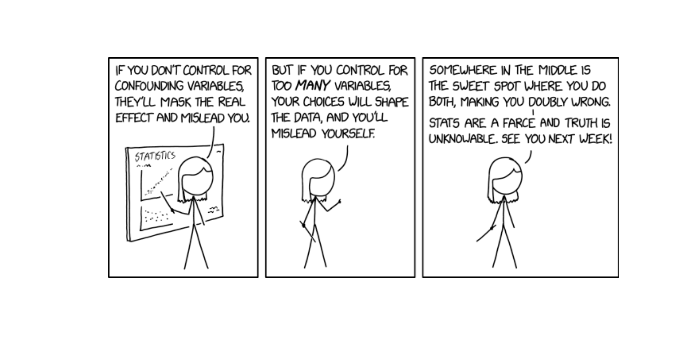
Lesson 32: Multiple Linear Regression I
Calendar
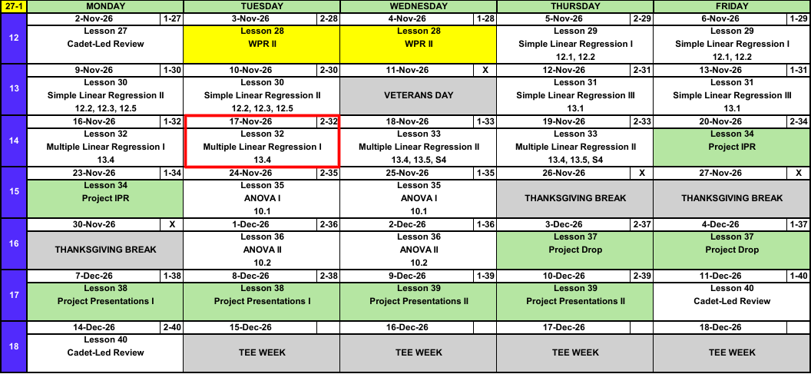
Admin
- Project partners: Select your project partner
- Project IPR: Lesson 34 (20, 23 Nov). Come in as finished as possible.
- Project starter code: below
What We Did: Lessons 29 to 31
NoteKey Concepts from Lesson 29
- Least squares: choose \(\hat{\beta}_0\), \(\hat{\beta}_1\) to minimize \(\sum (y_i - \hat{y}_i)^2\)
- \(\hat{\beta}_1 = \dfrac{\sum (x_i - \bar{x})(y_i - \bar{y})}{\sum (x_i - \bar{x})^2}\), \(\hat{\beta}_0 = \bar{y} - \hat{\beta}_1\bar{x}\)
- Slope: change in the mean of \(y\) for a one unit increase in \(x\)
- Predict only inside the range of the \(x\) data
NoteKey Concepts from Lesson 30
- Slope test: \(H_0: \beta_1 = 0\), \(t = \hat{\beta}_1 / s_{\hat{\beta}_1}\), df \(= n - 2\)
- \(r^2 = 1 - \text{SSE}/\text{SST}\): proportion of variation in \(y\) explained by the line
- R:
lm(y ~ x),summary(),predict()
NoteKey Concepts from Lesson 31
- Model: \(Y = \beta_0 + \beta_1 x + \varepsilon\), \(\varepsilon \sim N(0, \sigma^2)\), independent
- LINE: Linear, Independent, Normal, Equal variance
- Residual plot (residuals vs fitted): no pattern checks L, constant spread checks E
- Histogram of residuals: checks N
- Independence: comes from how the data were collected
What We’re Doing: Lesson 32
Objectives
- State the multiple regression model. (SLO 4)
- Estimate and interpret the partial-slope coefficients of a multiple regression model. (SLO 4)
- Interpret standard regression output from statistical software. (SLO 4)
Required Reading
Devore 13.4
Break!
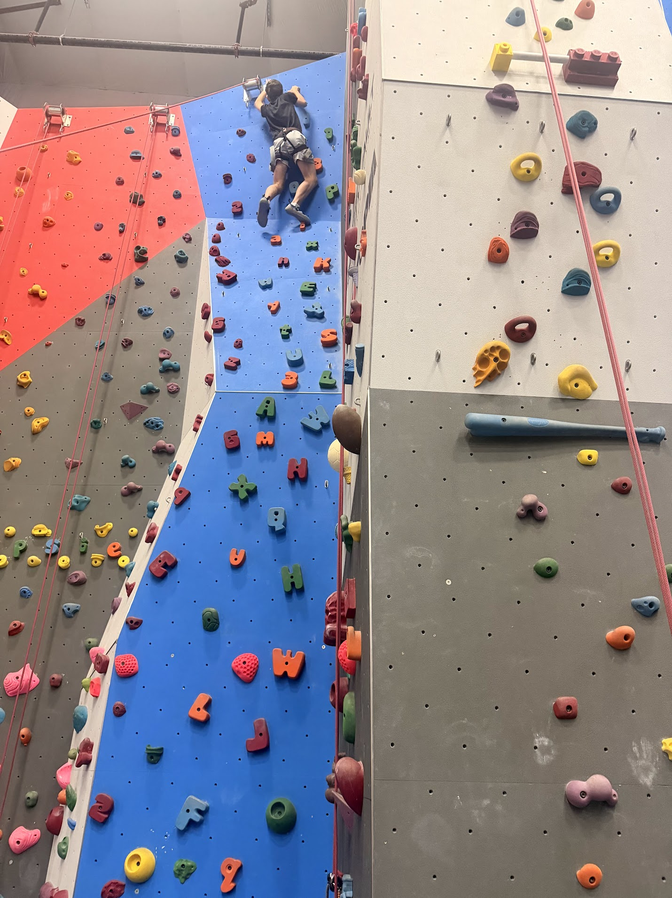
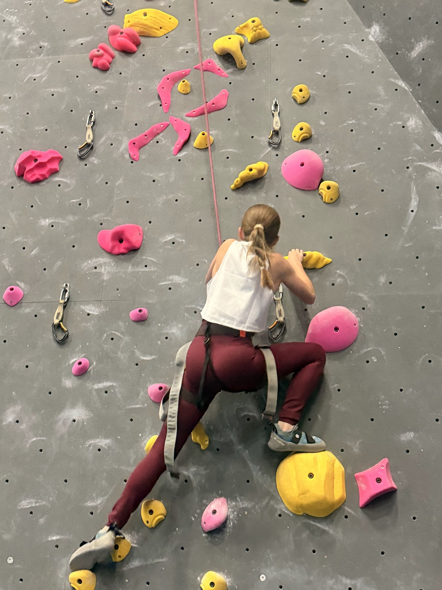
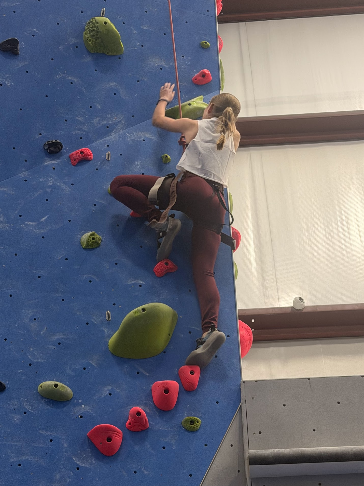
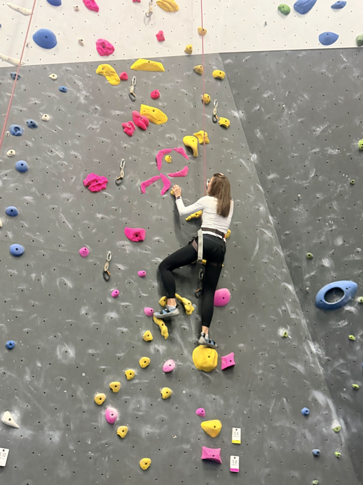
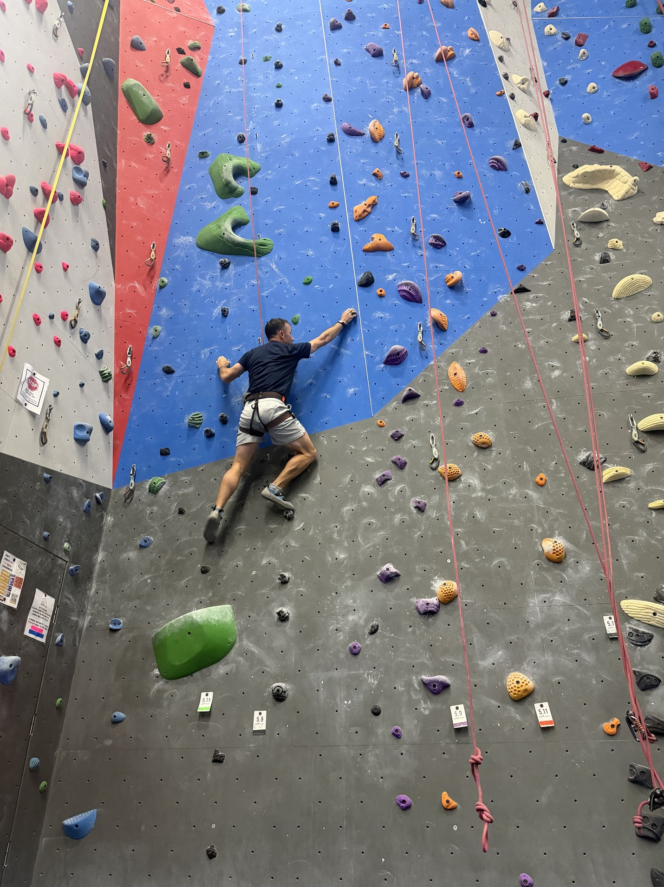
DMath Intramurals
DMath Volleyball!!

Math vs DSE
NotePreviously 0-2
1-3
The Takeaway for Today
NoteKey Concepts from Lesson 32
- Model: \(Y = \beta_0 + \beta_1 x_1 + \beta_2 x_2 + \cdots + \beta_k x_k + \varepsilon\)
- Interpret \(\hat{\beta}_j\): holding all else constant, a one unit increase in \(x_j\) is a \(\hat{\beta}_j\) unit increase in \(y\), on average
- Not significant? Drop it and refit
- Categorical with 3 levels: 2 indicator variables; each coefficient is a difference from the baseline level
- R:
lm(y ~ x1 + x2 + x3)
Lesson 31, Again
Same question: what drives 12 mile ruck time? 100 cadets. Download the data
ruck <- read.csv("ruck-mlr.csv")
model1 <- lm(time ~ weight, data = ruck)
summary(model1)
Call:
lm(formula = time ~ weight, data = rk)
Residuals:
Min 1Q Median 3Q Max
-19.2813 -8.0967 0.2452 8.4634 23.9519
Coefficients:
Estimate Std. Error t value Pr(>|t|)
(Intercept) 121.0338 4.4094 27.45 <2e-16 ***
weight 1.3534 0.1035 13.08 <2e-16 ***
---
Signif. codes: 0 '***' 0.001 '**' 0.01 '*' 0.05 '.' 0.1 ' ' 1
Residual standard error: 10.37 on 98 degrees of freedom
Multiple R-squared: 0.6358, Adjusted R-squared: 0.6321
F-statistic: 171.1 on 1 and 98 DF, p-value: < 2.2e-16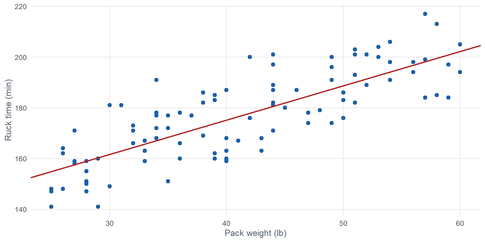
\[\widehat{\text{time}} = 121.03 + 1.35\,(\text{weight})\]
\(r^2 =\) 63.6%, \(s =\) 10.37 min. Weight explains 63.6% of the variation. What else slows a cadet down?
More Than One \(x\)
ImportantMultiple Linear Regression Model
\[Y = \beta_0 + \beta_1 x_1 + \beta_2 x_2 + \cdots + \beta_k x_k + \varepsilon, \qquad \varepsilon \sim N(0, \sigma^2)\]
- \(k\) explanatory variables (predictors) instead of 1
- \(\beta_j\): the partial slope for \(x_j\)
- Same LINE assumptions, same least squares idea
Add Three Quantitative Predictors
- run: 2 mile run time (min)
- height: cadet height (in)
- gpa: cadet GPA
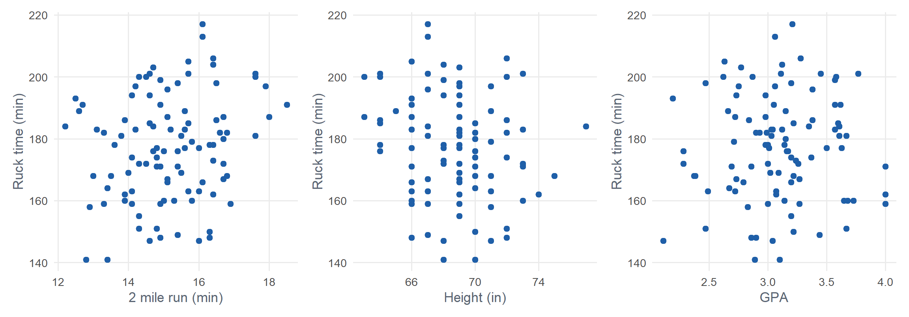
model2 <- lm(time ~ weight + run + height + gpa, data = ruck)
summary(model2)
Call:
lm(formula = time ~ weight + run + height + gpa, data = rk)
Residuals:
Min 1Q Median 3Q Max
-15.819 -6.198 -0.546 6.254 17.440
Coefficients:
Estimate Std. Error t value Pr(>|t|)
(Intercept) 149.27089 23.60001 6.325 8.24e-09 ***
weight 1.41419 0.08387 16.862 < 2e-16 ***
run 3.82571 0.64135 5.965 4.17e-08 ***
height -1.34211 0.30348 -4.422 2.60e-05 ***
gpa 1.19998 2.13035 0.563 0.575
---
Signif. codes: 0 '***' 0.001 '**' 0.01 '*' 0.05 '.' 0.1 ' ' 1
Residual standard error: 8.343 on 95 degrees of freedom
Multiple R-squared: 0.7714, Adjusted R-squared: 0.7618
F-statistic: 80.14 on 4 and 95 DF, p-value: < 2.2e-16- weight, run, height: P-values below 0.05. Each one helps.
- gpa: P-value = 0.57. Not significant. GPA doesn’t help predict ruck time once the others are in the model.
ImportantA Predictor Isn’t Significant?
Drop it and refit the model. Don’t interpret coefficients from a model with a predictor you’re throwing out.
Refit Without GPA
model3 <- lm(time ~ weight + run + height, data = ruck)
summary(model3)
Call:
lm(formula = time ~ weight + run + height, data = rk)
Residuals:
Min 1Q Median 3Q Max
-15.5634 -6.0402 -0.3927 6.4020 16.9822
Coefficients:
Estimate Std. Error t value Pr(>|t|)
(Intercept) 151.28148 23.24542 6.508 3.46e-09 ***
weight 1.41323 0.08355 16.914 < 2e-16 ***
run 3.87436 0.63325 6.118 2.05e-08 ***
height -1.32749 0.30129 -4.406 2.74e-05 ***
---
Signif. codes: 0 '***' 0.001 '**' 0.01 '*' 0.05 '.' 0.1 ' ' 1
Residual standard error: 8.313 on 96 degrees of freedom
Multiple R-squared: 0.7706, Adjusted R-squared: 0.7635
F-statistic: 107.5 on 3 and 96 DF, p-value: < 2.2e-16\[\widehat{\text{time}} = 151.28 + 1.41\,(\text{weight}) + 3.87\,(\text{run}) -1.33\,(\text{height})\]
The coefficients moved a little from the GPA model. Always interpret the refit model.
Interpret the Partial Slopes
ImportantInterpreting a Partial Slope
Holding all else constant, a one unit increase in \(x_j\) is a \(\hat{\beta}_j\) unit increase in \(y\), on average.
- weight: holding all else constant, a one pound increase in pack weight is a 1.41 minute increase in ruck time, on average.
- run: holding all else constant, a one minute increase in 2 mile run time is a 3.87 minute increase in ruck time, on average.
- height: holding all else constant, a one inch increase in height is a 1.33 minute decrease in ruck time, on average.
Predict
A cadet carries 45 lb, runs a 15:00 2 mile, and is 70 inches tall.
\[\widehat{\text{time}} = 151.28 + 1.41(45) + 3.87(15) -1.33(70) = 180.07 \text{ min}\]
predict(model3, newdata = data.frame(weight = 45, run = 15, height = 70))Add a Categorical Predictor
route: Mountain, Road, or Trail
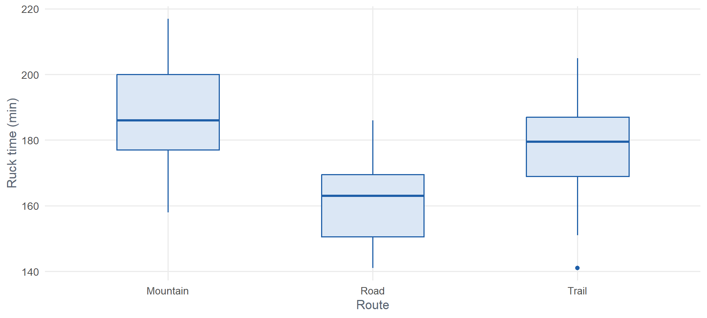
Indicator Variables
R can’t multiply “Trail” by a number. It builds indicator (dummy) variables:
| route | \(x_{\text{Road}}\) | \(x_{\text{Trail}}\) |
|---|---|---|
| Mountain | 0 | 0 |
| Road | 1 | 0 |
| Trail | 0 | 1 |
model4 <- lm(time ~ weight + run + height + route, data = ruck)
summary(model4)
Call:
lm(formula = time ~ weight + run + height + route, data = rk)
Residuals:
Min 1Q Median 3Q Max
-9.0576 -2.8935 -0.1998 3.1612 10.9664
Coefficients:
Estimate Std. Error t value Pr(>|t|)
(Intercept) 164.67535 11.98230 13.743 < 2e-16 ***
weight 1.27731 0.04424 28.874 < 2e-16 ***
run 3.64393 0.32608 11.175 < 2e-16 ***
height -1.27462 0.15501 -8.223 1.09e-12 ***
routeRoad -17.73727 1.09433 -16.208 < 2e-16 ***
routeTrail -9.19057 1.00495 -9.145 1.21e-14 ***
---
Signif. codes: 0 '***' 0.001 '**' 0.01 '*' 0.05 '.' 0.1 ' ' 1
Residual standard error: 4.275 on 94 degrees of freedom
Multiple R-squared: 0.9406, Adjusted R-squared: 0.9375
F-statistic: 297.8 on 5 and 94 DF, p-value: < 2.2e-16\[\widehat{\text{time}} = 164.68 + 1.28\,(\text{weight}) + 3.64\,(\text{run}) -1.27\,(\text{height}) -17.74\,x_{\text{Road}} -9.19\,x_{\text{Trail}}\]
Interpret
- routeRoad: holding all else constant, a Road ruck is 17.74 minutes faster than a Mountain ruck, on average.
- routeTrail: holding all else constant, a Trail ruck is 9.19 minutes faster than a Mountain ruck, on average.
- Both compare to the baseline (Mountain), not to each other.
Three Parallel Lines
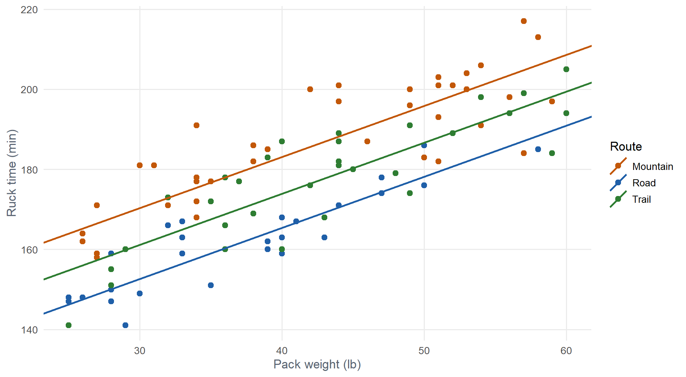
Plug the indicators into the equation. Each route gets its own intercept; the slopes stay the same.
| Route | \(x_{\text{Road}}\) | \(x_{\text{Trail}}\) | Intercept |
|---|---|---|---|
| Mountain | 0 | 0 | 164.68 |
| Road | 1 | 0 | 164.68 -17.74 = 146.94 |
| Trail | 0 | 1 | 164.68 -9.19 = 155.48 |
\[ \begin{aligned} \textbf{Mountain:}\quad \widehat{\text{time}} &= \color{#c25708}{164.68} + 1.28\,(\text{weight}) + 3.64\,(\text{run}) -1.27\,(\text{height}) \\ \textbf{Road:}\quad \widehat{\text{time}} &= \color{#1f5fa8}{146.94} + 1.28\,(\text{weight}) + 3.64\,(\text{run}) -1.27\,(\text{height}) \\ \textbf{Trail:}\quad \widehat{\text{time}} &= \color{#2e7d32}{155.48} + 1.28\,(\text{weight}) + 3.64\,(\text{run}) -1.27\,(\text{height}) \end{aligned} \]
Three Models
| Model | Predictors | \(R^2\) | \(s\) (min) |
|---|---|---|---|
| 1 | weight | 63.6% | 10.37 |
| 3 | weight, run, height | 77.1% | 8.31 |
| 4 | weight, run, height, route | 94.1% | 4.27 |
Each step explains more of the variation in ruck time. Next lesson: is adding predictors always better?
Let’s Go to Vantage!
library(tidyverse)
library(foundry)
master <- datasets.read_table("ay27_1_master")
MY_BRIGADE <- "20TH ENGINEER BRIGADE"
bde <- master |>
filter(BrigadeName == MY_BRIGADE) |>
select(height, weight, sex) |>
filter(!is.na(height), !is.na(weight), !is.na(sex))
# Simple: weight on height
mod1 <- lm(weight ~ height, data = bde)
summary(mod1)
# Multiple: add sex (2 levels, so 1 indicator; Female is the baseline)
mod2 <- lm(weight ~ height + sex, data = bde)
summary(mod2)- Interpret the height coefficient in
mod2. Why did it change frommod1? - Interpret sexMale.
- Which model has the higher \(R^2\)?
- Add a second predictor to your project model.
Project Starter Code
- Slide deck starter (Quarto reveal.js)
- Executive summary starter (Quarto HTML)
- Open in Vantage, swap in your brigade and variables, Render
Before You Leave
Today
- \(Y = \beta_0 + \beta_1 x_1 + \cdots + \beta_k x_k + \varepsilon\)
- Holding all else constant, a one unit increase in \(x_j\) is a \(\hat{\beta}_j\) unit increase in \(y\), on average
- Predictor not significant: drop it and refit
- Categorical with \(c\) levels: \(c - 1\) indicators, compare to the baseline
Any questions?
Next Lesson
Lesson 33: Multiple Linear Regression II
- 18, 19 Nov
- Devore 13.4, 13.5, S4
- LINE for multiple regression, \(R^2\) and adjusted \(R^2\), indicator variables
Upcoming Graded Events
- Project IPR: Lesson 34 (20, 23 Nov)
- Project Products: Lesson 37 (3, 4 Dec)
- TEE: 15 to 18 Dec 2026